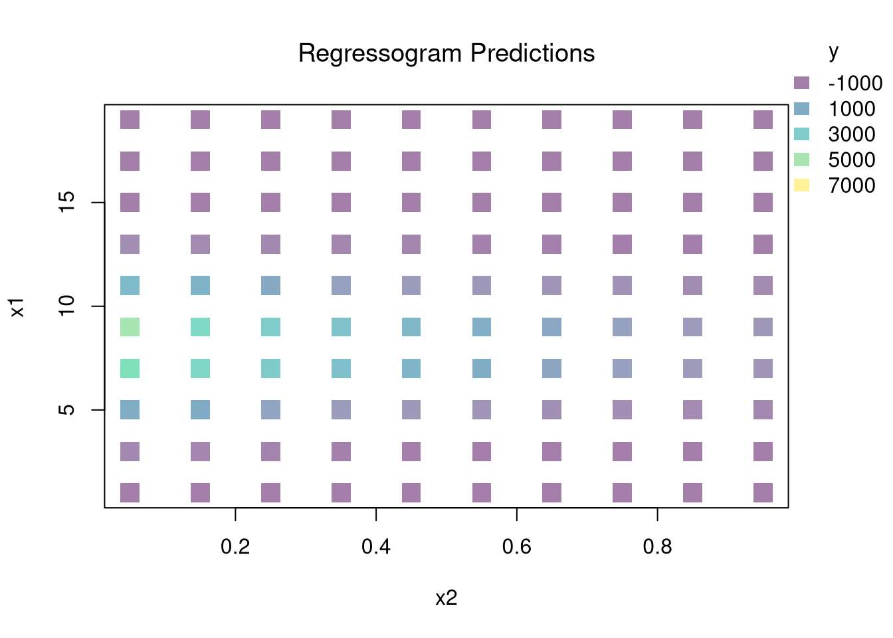

You can estimate a nonparametric model with multiple \(X\) variables with a multivariate regressogram. Here, we cut the data into exclusive bins along each dimension (called dummy variables), and then run a regression on all dummy variables.
################### Multivariate Regressogram#################### Regressogram Binsdat$x1c <-cut(dat$x1, bks1)#head(dat$x1c,3)dat$x2c <-cut(dat$x2, bks2)## Regressogramreg <-lm(y~x1c*x2c, data=dat) #nonlinear w/ complex interactions## Predicted Values## For Points in Middle of Each Binpred_df_rgrm <-expand.grid(x1c=levels(dat$x1c),x2c=levels(dat$x2c))pred_df_rgrm$yhat <-predict(reg, newdata=pred_df_rgrm)pred_df_rgrm <-cbind(pred_df_rgrm, pred_x)## Plot Predictionspar(oma=c(0,0,0,2))plot(x1~x2, pred_df_rgrm,col=ycol_pal[cut(pred_df_rgrm$yhat,col_scale)],pch=15, cex=2,main='Regressogram Predictions', font.main=1)add_legend(x='topright', col_scale=col_scale,yl=6, inset=c(0,.05),title='y')

22.2 Local Regressions
Just like with bivariate data, you can also use split-sample (or peicewise) regressions for multivariate data.
Break Points.
Incorporating Kinks and Discontinuities in \(X\) are a type of transformation that can be modeled using factor variables. As such, \(F\)-tests can be used to examine whether a breaks is statistically significant.
Code
library(Ecdat)data(Caschool)Caschool$score <- (Caschool$readscr + Caschool$mathscr) /2reg <-lm(score~avginc, data=Caschool)# F Test for Breakreg2 <-lm(score ~ avginc*I(avginc>15), data=Caschool)anova(reg, reg2)# Chow Test for Breakdata_splits <-split(Caschool, Caschool$avginc <=15)resids <-sapply(data_splits, function(dat){ reg <-lm(score ~ avginc, data=dat)sum( resid(reg)^2)})Ns <-sapply(data_splits, function(dat){ nrow(dat)})Rt <- (sum(resid(reg)^2) -sum(resids))/sum(resids)Rb <- (sum(Ns)-2*reg$rank)/reg$rankFt <- Rt*Rbpf(Ft,reg$rank, sum(Ns)-2*reg$rank,lower.tail=F)# See also# strucchange::sctest(y~x, data=xy, type="Chow", point=.5)# strucchange::Fstats(y~x, data=xy)# To Find Changes# segmented::segmented(reg)
22.3 Model Selection
One of the most common approaches to selecting a model or bandwidth is to minimize error. Leave-one-out Cross-validation minimizes the average “leave-one-out” mean square prediction errors: \[\begin{eqnarray}
\min_{\mathbf{H}} \quad \frac{1}{n} \sum_{i=1}^{n} \left[ \hat{Y}_{i} - \hat{y_{[i]}}(\mathbf{X},\mathbf{H}) \right]^2,
\end{eqnarray}\] where \(\hat{y}_{[i]}(\mathbf{X},\mathbf{H})\) is the model predicted value at \(\mathbf{X}_{i}\) based on a dataset that excludes \(\mathbf{X}_{i}\), and \(\mathbf{H}\) is matrix of bandwidths. With a weighted least squares regression on three explanatory variables, for example, the matrix is \[\begin{eqnarray}
\mathbf{H}=\begin{pmatrix}
h_{1} & 0 & 0 \\
0 & h_{2} & 0 \\
0 & 0 & h_{3} \\
\end{pmatrix},
\end{eqnarray}\] where each \(h_{k}\) is the bandwidth for variable \(X_{k}\).
There are many types of cross-validation . For example, one extension is k-fold cross validation, which splits \(N\) datapoints into \(k=1...K\) groups, each sized \(B\), and predicts values for the left-out group. adjusts for the degrees of freedom, whereas the function in R uses by default. You can refer to extensions on a case by case basis.
22.4 Hypothesis Testing
There are two main ways to summarize gradients: how \(Y\) changes with \(X\).
For regressograms, you can approximate gradients with small finite differences. For some small \(h_{p}\), we can compute \[\begin{eqnarray}
\hat{\beta}_{p}(\mathbf{x}) &=& \frac{ \hat{y}(x_{1},...,x_{p}+ \frac{h_{p}}{2}...,x_{P})-\hat{y}(x_{1},...,x_{p}-\frac{h_{p}}{2}...,x_{P})}{h_{p}},
\end{eqnarray}\]
When using split-sample regressions or local linear regressions, you can use the estimated slope coefficients \(\hat{\beta}_{p}(\mathbf{x})\) as gradient estimates in each direction.
After computing gradients, you can summarize them in various plots: Histogram of \(\hat{\beta}_{p}(\mathbf{x})\), Scatterplot of \(\hat{\beta}_{p}(\mathbf{x})\) vs. \(X_{p}\), or the CI of \(\hat{\beta}_{p}(\mathbf{x})\) vs \(\hat{\beta}_{p}(\mathbf{x})\) after sorting the gradients
You may also be interested in a particular gradient or a single summary statistic. For example, a bivariate regressogram can estimate the marginal effect of \(X_{1}\) at the means; \(\hat{\beta_{1}}(\bar{\mathbf{x}}=[\bar{x_{1}}, \bar{x_{2}}])\). You may also be interested in the mean of the marginal effects (sometimes said simply as “average effect”), which averages the marginal effect over all datapoints in the dataset: \(1/n \sum_{i}^{n} \hat{\beta_{1}}(\mathbf{X}_{i})\), or the median marginal effect. Such statistics are single numbers that can be presented similar to an OLS regression table where each row corresponds a variable and each cell has two elements: “mean gradient (sd gradient)”.